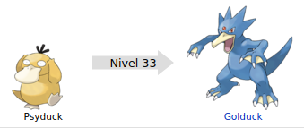

Psyduck (コダック Koduck en japonés) es un Pokémon de tipo agua introducido en la primera generación.

Evoluciones de Psyduck
Su nombre proviene de la combinación de palabras en inglés psychic (psíquico) y duck (pato).
Su nombre japonés, Kodakku, viene del término japonés こ ko o 子 ko (niño, que se puede interpretar como pequeño), y del inglés duck (pato), en katakana ダック dakku.
Su nombre francés, Psykokwak, proviene de las palabras psycho (referente a la mente) y «couac» (onomatopeya del sonido de un pato).
Psyduck está basado en un pato. Este Pokémon bípedo de tonalidad amarilla posee un enorme pico ancho, un par de ojos con una mirada perdida y tres pelos en la cabeza. Sus patas delanteras tienen tres garras con las que puede llegar a rasguñar a sus oponentes, generalmente las usa para sostener su cabeza, sus patas traseras son palmeadas. Posee una pequeña cola amarrilla.
La principal característica de este Pokémon son sus poderes psíquicos, los cuales son más poderosos entre más fuerte sea la jaqueca que padece, estos dolores son tan fuertes que lo hacen chillar. A pesar de esto, Psyduck nunca recuerda haber usado estos poderes, por lo que siempre parece desconcertado, de igual manera es muy difícil determinar cuando este los usará de nuevo. Se dice que podrá usar estos poderes cuando sus neuronas se encuentren totalmente despiertas, este poder consiste en emitir ondas cerebrales similares a las que generan cuando está dormido. Estos descubrimientos levantaron gran polémica entre los eruditos y científicos que lo investigan.
Psyduck odia sus dolores de cabeza por lo que es común verlo tratando de mantener su mente en blanco y quedándose sin hacer nada. Habita cerca de mantos acuíferos como lagos y ríos, cuando anida se le suele ver en grupos para cuidar a sus huevos y polluelos.
Página creada por Luis Felipe Restrepo y Daniel Felipe Gutierrez
Información extraida de: Psyduck. (s. f.). WikiDex. Recuperado 5 de noviembre de 2022, de https://www.wikidex.net/wiki/Psyduck